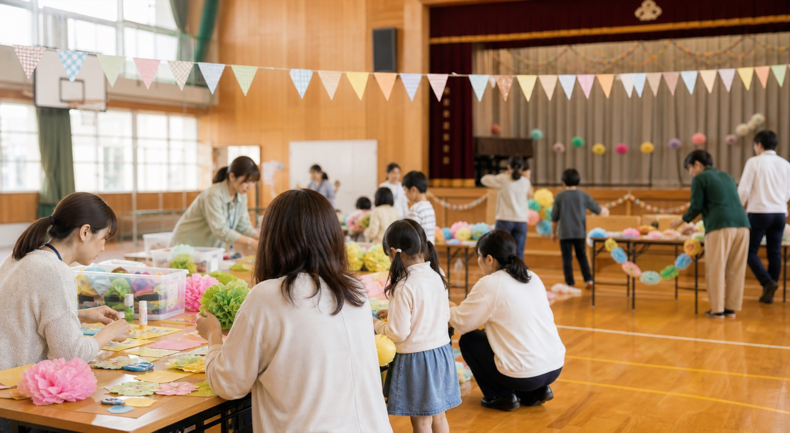
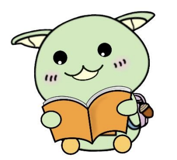
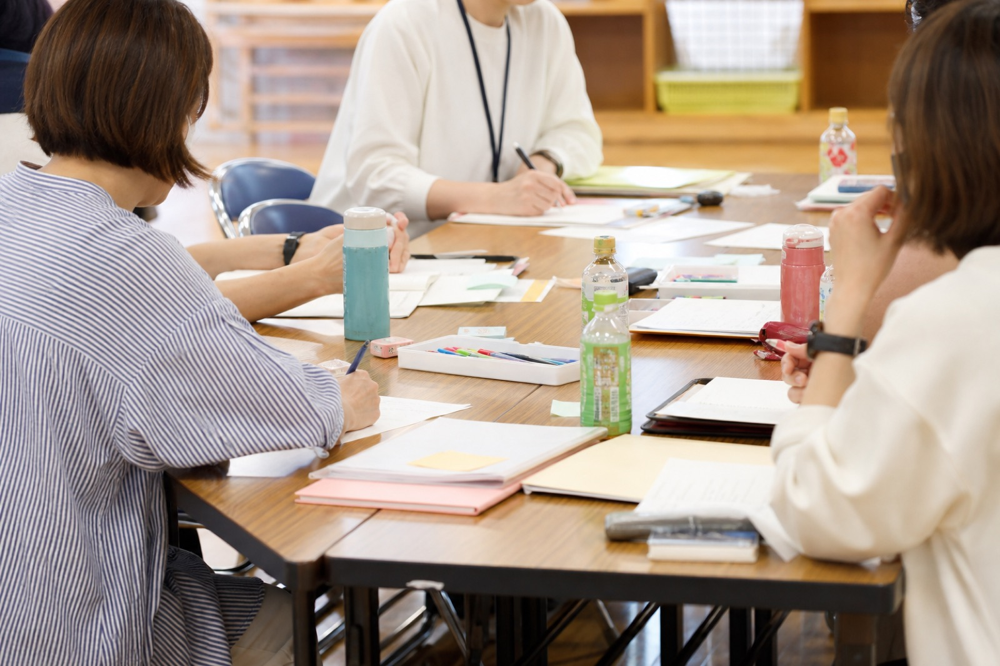

できる範囲で関われる
忙しい毎日の中でも、少しの関わりから参加できる活動づくりを大切にしています。
Welcome
忙しい毎日の中でも、少しの関わりから参加できる活動づくりを大切にしています。
行事や活動を通して、子どもたちが過ごす学校の様子に自然と触れられます。
保護者、先生方、地域の皆さまと顔の見える関係を育みます。

Activities
育友会の活動は、特別な人だけが担うものではありません。 行事の準備、学校との連携、地域の方との交流など、一人ひとりの小さな関わりが、 子どもたちにとって温かな経験につながります。
会長挨拶と活動方針を見るUpdates

Mamorun

小立野小学校キャラクター「まもるん」を、歌に合わせて楽しく描けるコンテンツです。 動画を見ながら、親子でいっしょに描いてみてください。
絵描き歌を見るAbout

小立野小学校育友会の目的や活動方針、会長挨拶を掲載しています。 今年度のスローガンや活動への思いをご覧ください。
詳しく見るDocuments
総会資料や規約などのPDFを掲載しています。 必要な資料を資料一覧ページから確認できます。
資料一覧ページへContact
小立野小学校育友会へのお問い合わせは、専用フォームから受け付けています。 ご質問やご連絡がありましたら、お問い合わせページからお送りください。
お問い合わせページへ